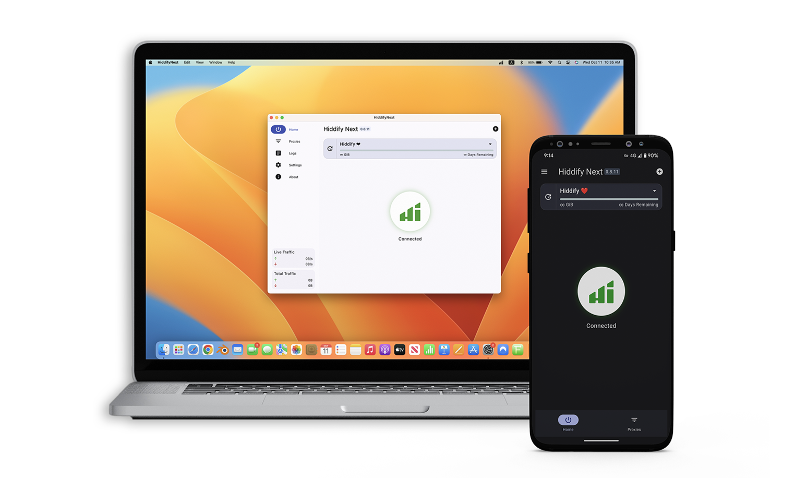

💡 Hiddify 全平台 VPN 客户端 | WWZ.iM — 涵盖 Android、Windows、iOS、macOS 各平台常用客户端，兼容 Clash、Sing-box 与 V2Ray 订阅格式。

一、直接下载与客户端对照
可按当前使用的操作系统与订阅链接格式选择对应客户端，快速获取官方发布版本：
Hiddify App Releases全平台开源客户端官方 GitHub 发布页
V2rayN（Windows / macOS）常用 V2Ray / Sing-box 核心桌面客户端
Sing-Box 客户端通用代理核心与多平台配置指南
Shadowrocket（iOS）App Store 小火箭官方应用页
| 系统平台 | Clash 订阅（默认） | SingBox 订阅 | V2Ray 订阅 |
|---|---|---|---|
| Android | Hiddify-Android | Sing-Box | V2rayNG |
| Windows | Hiddify-Windows | V2rayN Windows | V2rayN Windows |
| iOS | Hiddify-iOS | Sing-Box | Shadowrocket |
| macOS | Hiddify-MacOS | V2rayN Windows | V2rayN Windows |
附：常用网页翻译工具参考 Yandex Translate。
二、前言
目前各种科学上网协议不断增多，客户端软件也越来越丰富，使用前可按以下两点快速判断：
- 先确定你所持有的订阅类型，再选择对应支持的客户端软件，日常默认常用 V2Ray 订阅。
- 优先推荐使用 Hiddify 直接导入 Clash 订阅，跨平台界面一致且维护成本低。
三、Hiddify App 是什么？
一款基于 Sing-box 通用代理核心构建的跨平台代理客户端。Hiddify 提供了非常全面的代理功能，例如基于延迟自动选择节点、TUN 全局虚拟网卡模式、使用远程订阅配置文件等。它无广告且代码开源，为用户提供了安全、私密的多协议互联网访问体验。
🚀 主要特性
- ✈️ 多平台客户端：支持 Android、iOS、Windows、macOS 和 Linux
- ⭐ 简洁直观的用户界面：零广告、上手快速
- 🔎 自动选路：支持基于延迟自动切换可用节点
- 🟡 全面的协议支持：Vless、Vmess、Reality、TUIC、Wireguard、Hysteria、SSH
- 🟡 多格式订阅兼容：Sing-box、V2ray、Clash、Clash.Meta
- 🔄 支持自动更新订阅：定时拉取最新节点清单
- 🔎 用量可视化：可显示包含剩余天数和流量使用情况的配置文件信息
- 🛡️ 开源且由社区驱动：透明可审计，持续迭代
- 🌙 外观适配：原生支持深色与浅色模式
- ⚙️ 生态兼容：兼容主流代理管理面板
- ⭐ 多地区规则配置：内置面向不同网络环境的分流规则支持
四、免费 VPN 备选推荐
若仅需临时应急或零配置接入，可尝试以下基于 Cloudflare WARP 生态的开源免费客户端：
五、使用方法与教程
如何实现 iOS 小火箭同时访问家里局域网并兼顾出国分流
📌 核心思路： 通过在 Shadowrocket 配置文件中将内网网段从“跳过代理 / 旁路路由”移交至指定 Socks5 策略，只需一个 VPN 工具即可同时外网访问家庭局域网（192.168.x.x）与日常国内外分流：
- 将自己的家庭公网 IP 绑定动态域名（DDNS）。
- 在路由器 OpenWrt 的 Passwall 服务端开启 Socks 服务器，设置端口与认证信息。
- 在 Shadowrocket（小火箭）中新增 Socks5 节点，服务器填写动态域名并填入对应端口与凭据。
- 修改当前使用的 Shadowrocket 配置文件：在 通用 设置中，分别将
跳过代理和TUN 旁路路由内的192.168.0.0/16删除；随后在 规则 列表中找到（或新增）类型IP-CIDR、地址192.168.0.0/16的规则，将策略设为第 3 步添加的 Socks5 节点并开启“不解析域名”。
补充提示：多数小火箭规则已自带 192.168.0.0/16 条目，直接在规则中搜索并修改策略即可，避免重复添加导致规则冲突。主页可自由选择日常出国节点，不影响回家访问内网设备。
六、官方地址直达
| 推荐工具 | 大致介绍 | 项目原地址 / 指南 | 软件下载 |
|---|---|---|---|
| V2rayN | Windows 客户端 | GitHub Releases | 网盘镜像直链 |
| Shadowrocket | iOS VPN 应用 | 申请免费美区 Apple ID | App Store 下载 |
| V2rayNG | Android 客户端 | GitHub Releases | 网盘镜像直链 |
订阅转换工具推荐： 如果需要将 V2Ray、Hysteria2 或通用订阅转换为 Clash / Mihomo 格式，可使用本站内置工具 SUB.WWZ.iM — Clash.Meta 节点转换器。